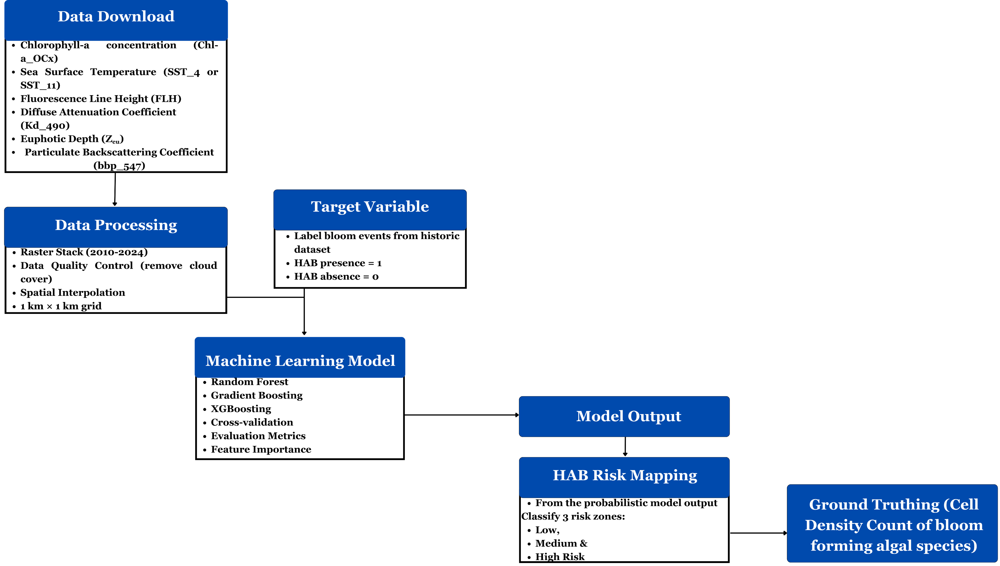

Overview
Harmful Algal Blooms (HABs) threaten coastal ecosystems, fisheries, aquaculture, and communities along Bangladesh’s coast, yet a region-specific early warning system is currently lacking. This project proposes a remote sensing and machine learning framework to predict HAB risk across the northern Bay of Bengal 5–7 days in advance using satellite-derived environmental conditions and historical bloom records. The model will identify the environmental drivers associated with bloom development and generate seasonal low-, medium-, and high-risk maps to support fisheries management and climate resilience. The proposed framework is designed as a scalable foundation for future HAB monitoring and early warning across Bangladesh’s coastal waters.
Methodology
- Data: Daily MODIS-Aqua Level-3 ocean-color and environmental datasets (2010–2024), including Chlorophyll-a, SST, FLH, Kd₄₉₀, euphotic depth, PAR, and bbp₅₄₇, combined with historical HAB occurrence records from published literature and, where feasible, in-situ observations.
- Tools: Python, R/RStudio, NASA Ocean Color products, and ArcGIS for satellite-data processing, spatial analysis, machine learning, and visualization.
- Methods: Satellite variables will be quality-controlled, spatially harmonized, and matched with historical HAB events to create bloom/non-bloom training data. Random Forest will be the primary classifier, supported by XGBoost, with 3-, 5-, and 7-day lag configurations tested for early prediction. Models will be evaluated using accuracy, precision, recall, F1-score, ROC-AUC, and cross-validation, followed by feature-importance analysis and generation of monthly/seasonal HAB risk maps.

Research Proposal Pitch
This project was developed as a research proposal for a climate resilience and sustainability initiative. The pitch presents the proposed research framework, methodology, expected outcomes, and potential applications of a remote sensing and machine learning approach for early warning of harmful algal blooms in the northern Bay of Bengal.
Code & Data
All code, data processing scripts, and supplementary materials are available through the following repositories: